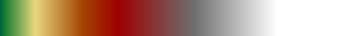

import piio
x = piio.read("i/terrassa.tif")
X = (255.0 * (x - x.min())/(x.max() - x.min())).clip(0,255)
piio.write("o/terrassa.png", X)

terrassa.png
A DEM is a two-dimensional array of numbers. Each number represents a height in meters. The positions inside the array are mapped into geographical coordinates (typically UTM). The mapping between positions in the array and geographical coordinates is called georeferencing. Thus, a geo-referenced DEM can be interpreted as a cloud of points in 3D space.
You can display the data in a DEM as an image, by mapping the heights to pixel intensities:
import piio x = piio.read("i/terrassa.tif") X = (255.0 * (x - x.min())/(x.max() - x.min())).clip(0,255) piio.write("o/terrassa.png", X)terrassa.png
Notice that DEMs are stored as TIFF files of floating-point values. To display them, we quantize their range of values into 8 bits and save them on a PNG file.
srtm4
lidar sites
dem_from_pair
lonlat vs utm in DEM
The simplest way to represent a DEM is by mapping the heights to pixel
intensities of a traditional 8-bit grayscale image.
For that we will use the function qauto, defined below
def qauto(x): # quantize a floating-point image into 8 bits
from numpy import float, uint8
m = x.min()
M = x.max()
X = (255 * (x.astype(float) - m) / (M - m) ).astype(uint8)
return X
In the following experiments we work with the DEM stored on file
fuji.tif of the area around the Fuji volcano. The data comes from
the SRTM4, which has a resolution of 90m per pixel.
import piio x = piio.read("i/fuji.tif") X = qauto(x) piio.write("o/fuji.png", X)
fuji.png
This image shows Fuji in the center (about $3700m$), surrounded by a mostly flat area and a few mountains ranges around it (of maximum height about $1700m$). When my son looked at this image he said it was a beautiful picture of the moon, behind some clouds on a foggy night. Clearly, images obtained by mapping heights to intensities are difficult to interpret.
Our visual system is not used to the direct representation of geometry by light intensity. Instead, light is reflected by the surface of objects and we receive this reflected light, which we know how to interpret. The amount of reflected light depends on the characteristics of the light and of the surface. The simplest illumination model is the Lambertian lighting, whereby there is a single point light source and each surface element reflects an amount of light proportional to the scalar product between the surface normal and the direction of the light source.
Consider the Lambertian model on a continuous setting, where the surface is defined by a function \[z=u(x,y)\] and the light source is located at the infinity on the direction of the vector $\vec s = (a,b,c)$. The normal to the surface at the location $(x,y)$ is \[ \vec n(x,y) = \frac{1}{\sqrt{1+u_x^2+u_y^2}}\left(-u_x, -u_y, 1\right) \] and thus the light intensity reflected at the location $(x,y)$ is \[ I(x,y) = \max\left(0, \frac{c - au_x - bu_y}{\sqrt{1+u_x^2+u_y^2}} \right) \] The maximum is needed because when the scalar product $\vec n\cdot\vec s$ is negative, the surface element is invisible from the light source. This function $I(x,y)$ is the light intensity that we would observe if we were right in the vertical direction and very far away (this is called a nadir view or, in some contexts, an orthoimage). Now, if $c$ is large enough---the sun is way above the horizon---then there are no shadows and $I>0$. Even more, if the slope of the surface is small with respect to $c$, then we can make the approximation $1\approx\sqrt{1+u_x^2+u_y^2}$. In that case, the value of $I$ is proportional to the directional derivative of $u$ along the direction $(a,b)$. Let us see how this looks.
First, we define a function to compute the directional derivative (by default, from the top-left direction).
def render_shading(a, s=(1,1)): # directional derivative of a along s
from numpy import pad
x = pad(a, ((0,0),(0,1)), 'edge')[:,1:] - a # da / dx
y = pad(a, ((0,1),(0,0)), 'edge')[1:,:] - a # da / dy
z = s[0] * x + s[1] * y # da / ds
return z
And now we display the Fuji DEM using this function
x = piio.read("i/fuji.tif").squeeze() X = render_shading(x) piio.write("o/fuji_shading.png", qauto(X) )
fuji_shading.png
Now, when my son saw this image, he said: well, now that's a close-up photo of a crater in the moon! He did not realize it was exactly the same data, but with a different color scheme.
This image looks a bit flat to my eyes. As if a slightly crumpled, but mostly flat, aluminium foil. It can be made livelier by filtering it by a Riesz kernel, defined by in the frequency domain by \[ \widehat{R_\sigma}(\xi,\eta) = \left(\xi^2+\eta^2\right)^{-\sigma/2} \]
def filter_riesz0(x, s): # Riesz scale-space (periodic boundary conditions)
from numpy.fft import fft2, ifft2, fftfreq
from numpy import repeat, hypot
h, w = x.shape
p = repeat(w*fftfreq(w).reshape(1,w), h, axis=0) # x-frequencies
q = repeat(h*fftfreq(h).reshape(h,1), w, axis=1) # y-frequencies
r = hypot(p, q) # image of spectral radius
r[0,0] = 1 # avoid warnings when 1/0
X = fft2(x) * r**s # apply the filter in the frequency domain
if (s <= 0):
X[0,0] = 0 # for negative s, set the mean to zero
return ifft2(X).real
def filter_riesz(x, s): # Riesz scale-space (symmetric boundary conditions)
from numpy import pad
h, w = x.shape
y = pad(x, ((0,h),(0,w)), 'symmetric')
z = filter_riesz0(y, s)
return z[0:h,0:w]
x = piio.read("i/fuji.tif").squeeze() X = filter_riesz(render_shading(x), -0.5) piio.write("o/fuji_smooth.png", qauto(X) )
fuji_smooth.png
Looking at this image, my kid said: this is the same crater as before, but much closer!
The technique of hillshading can be interpreted in two ways. From the point of view of mathematics, it is simply a directional derivative of the DEM re-scaled to a gray-scale palette. From the point of view of computer graphics, it is a rendering of the DEM data as a Lambertian (matte) surface, where the intensity of reflected light by a surface element is proportional to the cosine of the angle towards the light source.
The Lambertian model is one of the simpler lighting models, but not the
simplest. The simplest one is a binary mask, depending on whether each
surface element is accessible by the light source. Computing this
illumination model is called shadow casting. Since the shadow casting
algorithm is not very interesting in itself, we refer to the demtk
library.
# cast shadows over Fuji x = piio.read("i/fuji.tif").squeeze() import demtk z = demtk.render_shadows(x, (1,1,25)) piio.write("o/fuji_shadows.png", qauto(z) )
fuji_shadows.png
While shadows alone are not very interesting by themselves, they can be used to add some ``spice'' to other renderings. More importantly, they form the basis of the ambient occlusion introduced below.
Deep valleys, narrow streets and the bottom of wells have a dark feeling associated to them. Even if they can be lit by direct sunlight, this is far less likely than, for example, the top of a mountain. A way to capture this darkness is called ``ambient occlusion'' or the ``cloudy sky model''. The idea is that the brightness reflected by a surface element is proportional to the spherical angle of visible sky from that point. Thus the top of a mountain sees the whole sky and it is the brightest possible, and the bottom of a well sees just a tiny portion of the sky and it is very dark. An exact computation of ambient occlusion is very expensive, however it can be very well approximated by sampling the sky and a finite set of points and computing the average of the resulting shadows.
Notice that the average image of a small number of shadow images already gives an idea of the overall geometry: you can see the bright ridges, the dark valleys.
# coarse approximation of ambient occlusion x = piio.read("i/fuji.tif").squeeze() z = 0*x z += demtk.render_shadows(x, ( 1, 0, 25) ) z += demtk.render_shadows(x, ( 1, 1, 25) ) z += demtk.render_shadows(x, ( 0, 1, 25) ) z += demtk.render_shadows(x, (-1, 1, 25) ) z += demtk.render_shadows(x, (-1, 0, 25) ) z += demtk.render_shadows(x, (-1,-1, 25) ) z += demtk.render_shadows(x, ( 0,-1, 25) ) z += demtk.render_shadows(x, ( 1,-1, 25) ) piio.write("o/fuji_aaaprox.png", qauto(z/8) )
fuji_aaaprox.png
For urban regions, the average shadow image gives a clarifying view of dark thin streets and bright rooftops.
# coarse approximation of ambient occlusion x = piio.read("i/terrassa.tif").squeeze() z = 0*x z += demtk.render_shadows(x, ( 1, 0, 2) ) z += demtk.render_shadows(x, ( 1, 1, 2) ) z += demtk.render_shadows(x, ( 0, 1, 2) ) z += demtk.render_shadows(x, (-1, 1, 2) ) z += demtk.render_shadows(x, (-1, 0, 2) ) z += demtk.render_shadows(x, (-1,-1, 2) ) z += demtk.render_shadows(x, ( 0,-1, 2) ) z += demtk.render_shadows(x, ( 1,-1, 2) ) piio.write("o/terrassa_aaaprox.png", qauto(z/8) )
terrassa_aaaprox.png
Let us try a linear approximation of ambient occlusion. If there is an object of height $h$ above me at a distance $d$, it occludes a portion of the sky of size proportional to $h/d$. Of course, objects occlude themselves so this effect is not additive. But if we consider that it is additive---as a first approximation---, this amounts to computing the convolution of the height map $h(x,y)$ by the kernel $1/\sqrt{x^2+y^2}$, which is a particular case for $\sigma=1$ of our old friend: Riesz kernel. Since we are only interested in the substractive effect of heights (a deep well nearby does not make my sky any brighter), we have to keep only the negative part of the Riesz filter:
# linear approximation of ambient occlusion x = piio.read("i/terrassa.tif").squeeze() z = filter_riesz(x, 1) piio.write("o/terrassa_aalin.png", qauto(z.clip(-1000,0)) )
terrassa_aalin.png
A common way to display topographic maps is using a color palette. To each height it corresponds a different color. This is computed by composing the height function with the image of the desired colormap. The colormap itself may be designed by hand, or read from ``palette'' image. The traditional colormap goes from green to white through a sequence of earthy tones.
# read palette from file img_terrain = piio.read("i/DEM_poster.png") pal_terrain = img_terrain[0][0:256]DEM_poster.png
# apply palette to DEM x = piio.read("i/fuji.tif").squeeze() X = pal_terrain[qauto(x)] piio.write("o/fuji_palette.png", X )
fuji_palette.png
Palette-rendered topographic maps are beautiful and colorful, but they are so evocative that there is often the danger of interpreting them too seriously. For instance, you see that there is a height where the green color disappears, and another height where everything is white. But this has nothing to do with the tree-line or the presence of snow. The assignment of colors is essentially arbitrary. \begin{samepage} The arbitrariety of color palettes is very apparent when we use a geographic palette to render a urban elevation map. This does not mean that the tops of the skyscrapers are covered in snow!
\end{samepage}# render a urban DEM using a "terrain" palette x = piio.read("i/terrassa.tif").squeeze() X = pal_terrain[qauto(x)] piio.write("o/terrassa_pal.png", X )
terrassa_pal.png
Notice that, even if palettes provide an absolute meaning to heights, some resolution is lost. For example, it is almost impossible to see the concave crater of the volcano, while it was very clearly seen on the hill-shaded DEM. Thus, a useful technique consists in combining both renderings, for example by taking their average:
x = piio.read("i/fuji.tif").squeeze() from numpy import newaxis x_lam = qauto(render_shading(x))[:,:,newaxis] # lambertian shading of x x_pal = pal_terrain[qauto(x)] # color palette of x X = qauto(x_lam**.8 * x_pal) # combination (geometric mean) piio.write("o/fuji_combined.png", X)
fuji_combined.png
from numpy import fmax, dstack x = piio.read("i/fuji.tif").squeeze() r = filter_riesz(x, 1) x_signed = qauto(r) x_ridges = 2.0*qauto(fmax(0,r)).clip(0,255) x_valleys = 255-2.0*qauto(fmax(0,-r)).clip(0,255) x_curv = dstack([x_valleys, x_valleys-x_ridges, 255.0-x_ridges]) piio.write("o/fuji_signed.png" , x_signed ) piio.write("o/fuji_ridges.png" , x_ridges ) piio.write("o/fuji_valleys.png", x_valleys ) piio.write("o/fuji_curv.png", x_curv )
fuji_signed.png
fuji_ridges.png
fuji_valleys.png
fuji_curv.png
For urban regions, this gives a segmentation between rooftops (in red), streets (in blue) and flat or otherwise ambiguous parts (in white).
The best results are often obtained by merging the outputs of several
techniques above. The function demtk.render by default produces a
high-contrast rendering suitable for display in low-resolution projectors.
import demtk, piio x = piio.read("i/terrassa.tif").squeeze() piio.write("o/terrassa_full.png", demtk.render(x)) x = piio.read("i/fuji.tif").squeeze() piio.write("o/fuji_full.png", demtk.render(x))
terrassa_full.png
fuji_full.png
import demtk, piio x = piio.read("i/terrassa.tif").squeeze() piio.write("o/terrassa_erosion.png", demtk.render(demtk.cross_erosion(x))) piio.write("o/terrassa_dilation.png", demtk.render(demtk.cross_dilation(x))) piio.write("o/terrassa_median.png", demtk.render(demtk.cross_median(x))) piio.write("o/terrassa_median5.png", demtk.render(demtk.cross_median(x,5)))
terrassa_erosion.png
terrassa_dilation.png
terrassa_median5.png
morphological operations
cc filter
cc border, avg, min, min5pc
poisson, biharmonic, TV, with Dirichlet boundary conditions
neumann boundaries at selected points
apply shift (manually selected)
multiscale correlation
phase correlation
difference of registered images, signed palette
filtering of difference
nanavg
nanmed
xmedians
cnt
filtered fusion (by iqd, cnt, ...)
plyflatten
multiscale plyflatten
splatting
isolated points
local mesh
refined mesh heuristics
naive colorization
shadowed colorization
orthophoto merging (color median)
orthophoto merging by Poisson
orthophoto merging by osmosis